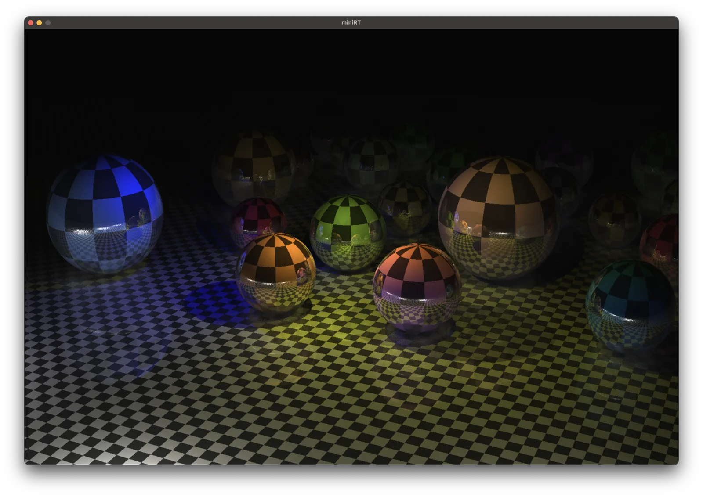

01
miniRT
C · CPU Ray Tracing · k-d Tree

C로 작성한 CPU ray tracer입니다. Sphere·plane·cylinder 교차, shadow ray와 재귀 반사를 구현하고 AABB pruning을 사용하는 k-d tree로 장면 공간을 분할했습니다.
Portfolio · 2026
Ray tracing과 wireframe rasterization을 직접 구현하며 장면 데이터가 화면 결과로 이어지는 과정을 다뤘습니다.
Graphics Work
01
C · CPU Ray Tracing · k-d Tree

C로 작성한 CPU ray tracer입니다. Sphere·plane·cylinder 교차, shadow ray와 재귀 반사를 구현하고 AABB pruning을 사용하는 k-d tree로 장면 공간을 분할했습니다.
02
C · Line Rasterization · View Transform
Height map을 3차원 와이어프레임 지형으로 변환하는 작은 렌더러입니다. 투영 basis, 시점 회전과 확대·축소, 선 rasterization과 endpoint 색상 보간을 직접 다뤘습니다.